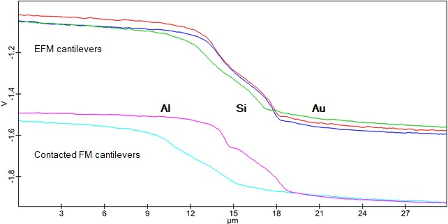
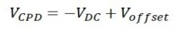
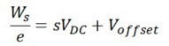
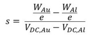
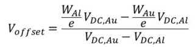
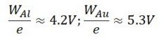
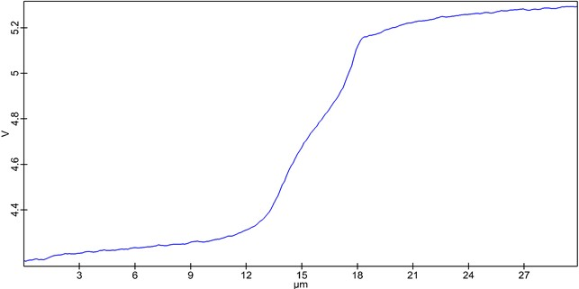
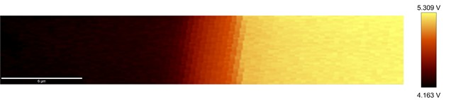

|
数值解读
|
KPFM 测量期间测量的 VDC 值不能等同于 VCPD，因为它们受到偏移影响（由于相移）并且是反相的。同样重要的是要注意，这些值始终是加权平均值，探针和样品的所有表面元素都会对其产生影响。测量的主要目的是观察具有不同功函数的材料或区域之间的对比度。要进行定量测量，需要一个能够在超高真空下工作的系统。

图 1：Bruker 参考样品上 5 种不同悬臂梁的典型结果，显示了 Al 到 Si 再到 Au 边缘的截面
要获得更有用的值，可以使用以下公式，通过对参考样品使用所用悬臂梁来确定 Voffset。

然而，如果要计算功函数的值，在测量样品之前需要对参考样品进行校准。每次更换悬臂梁时都必须这样做。功函数的值需要从文献中获得参考材料的数据。为了进行线性校准，至少需要两种不同的材料。要根据测量的 VDC 计算功函数值，需要以下公式：

s 和 Voffset 的值是根据参考值和在该材料上测量的值计算得出的：



使用计算器拖放操作，可以为 KPFM 图像或截面的每个点计算功函数值（图 2）。

图 2：使用 EFM 悬臂梁校正后 Al 到 Si 再到 Au 边缘的截面

图 3：使用 EFM 悬臂梁校正后 Al 到 Si 再到 Au 边缘的 KPFM 图像
测量值强烈依赖于方法的分辨率。如前所述，KPFM-AM 的分辨率是有限的。这意味着小斑点的测量值始终会与周围材料进行平均。此外，悬臂梁在测量过程中会发生变化，这也将影响校准。为了获得更可靠的结果，应使用另一个悬臂梁重复测量。